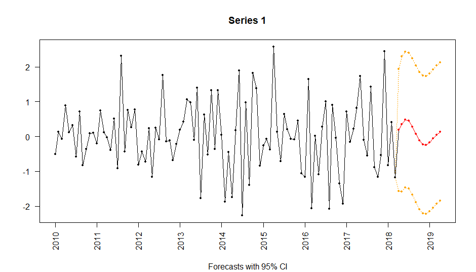

Overview
Nowcasting is often defined as the prediction of the present, the very near future and the very recent past.
rjd3nowcasting provides helps to operationalize the process of nowcasting. This first version can be used to specify and estimate dynamic factor models. A later version is expected to include the concept of “news” similar to the Nowcasting plugin for the Graphical User Interface of JDemetra+ v2.
Installation
Running rjd3 packages requires Java 17 or higher. How to set up such a configuration in R is explained here
To get the current stable version (from the latest release):
# install.packages("remotes")
remotes::install_github("rjdverse/rjd3toolkit@*release")
remotes::install_github("rjdverse/rjd3nowcasting@*release")To get the current development version from GitHub:
# install.packages("remotes")
remotes::install_github("rjdverse/rjd3nowcasting")Usage
Estimation
rslt_ml <- estimate_ml(dfm_model, data)
# or rslt_em<-estimate_em(dfm_model, data)
# or rslt_pca<-estimate_pca(dfm_model, data)Results
fcst <- get_forecasts(rslt_ml, nf = 2, forecasts_only = TRUE)
params <- get_parameters(rslt_ml)
factors <- get_factors(rslt_ml)
# ...
print(rslt_ml)
#> Measurement:
#> Sample mean Sample Stdev Coeff. of normalized factor F1
#> Series 1 0.01480 1.01376 0.11234
#> Series 2 0.01656 0.79045 -0.07066
#> Series 3 0.01279 1.03407 0.00171
#> Series 4 -0.08325 1.07544 -0.00624
#> Series 5 -0.21205 1.06909 -0.00302
#> Coeff. of normalized factor F2 Idiosyncratic variance
#> Series 1 0.55341 0.41091
#> Series 2 -0.06925 0.93488
#> Series 3 0.04849 0.98831
#> Series 4 0.03340 0.99792
#> Series 5 -0.33934 0.00000
#>
#> State:
#> VAR coefficients:
#> F1[-1] F2[-1] F1[-2] F2[-2]
#> F1 1.44836 -0.97181 -0.76117 1.23216
#> F2 -0.02442 -0.59011 -0.02834 -0.09459
#>
#> Innovative variance:
#> F1 F2
#> F1 1 -1
#> F2 -1 1
summary(rslt_ml)
#> Nowcasted values (only):
#> Series 1 Series 2 Series 3 Series 4 Series 5
#> Mar 2018 NA 0.3198988965 NA NA NA
#> Apr 2018 0.1827459 0.0001724063 NA NA -2.427725
plot(rslt_ml)
Package Maintenance and contributing
Any contribution is welcome and should be done through pull requests and/or issues. pull requests should include updated tests and updated documentation. If functionality is changed, docstrings should be added or updated.
Licensing
The code of this project is licensed under the European Union Public Licence (EUPL).